Para começar, vamos definir nosso personagem principal. Um grafo (graph) \(G\) é um par ordenado \((V, E)\), onde \(V\) é um conjunto finito e não vazio cujos elementos são chamados de vértices (vertices), e \(E\) é um conjunto de subconjuntos de dois elementos de \(V\); os elementos de \(E\) são chamados de arestas (edges). Assim, cada aresta é um par \(\{u, v\}\) onde \(u\) e \(v\), chamados de extremos da aresta, são vértices distintos de \(V\).1 O conjunto de vértices de um grafo \(G\) é frequentemente denotado por \(V(G)\), e seu conjunto de arestas por \(E(G)\). Quando o grafo \(G\) está claro pelo contexto, costumamos escrever \(V\) e \(E\) em vez de \(V(G)\) e \(E(G)\), respectivamente. Além disso, escrevemos \(uv\) em vez de \(\{u, v\}\), geralmente quando \(\{u, v\}\) é uma aresta de \(G\).
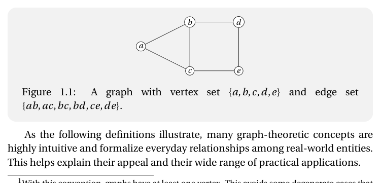
Como as definições a seguir ilustram, muitos conceitos da teoria dos grafos são altamente intuitivos e formalizam relações cotidianas entre entidades do mundo real. Isso ajuda a explicar seu apelo e seu amplo espectro de aplicações práticas.
Para um grafo \(G\), os vértices \(u\) e \(v\) de \(G\) são vizinhos (neighbors) (ou adjacentes) se \(uv \in E(G)\). Dizemos também que \(v\) é um vizinho de \(u\) em \(G\). A vizinhança (neighborhood) de \(u \in V(G)\) é o conjunto \[ N_G(u) \,:=\, \bigl\{\, v \in V(G) \;\big|\; uv \in E(G) \,\bigr\}, \] e escrevemos \(N(u)\) quando \(G\) está claro pelo contexto. Assim, \(N_G\) é uma função que recebe um vértice como entrada e retorna um conjunto de vértices como saída, isto é,2 \(N_G : V \to 2^V\).
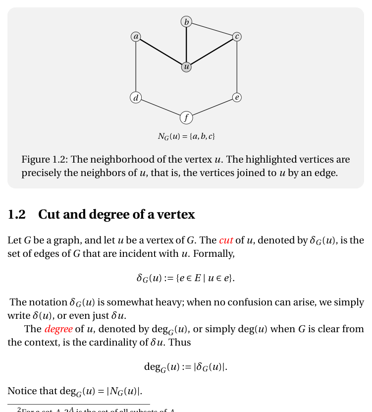
Seja \(G\) um grafo e \(u\) um vértice de \(G\). O corte (cut) de \(u\), denotado por \(\delta_G(u)\), é o conjunto de arestas de \(G\) que são incidentes com \(u\). Formalmente, \[ \delta_G(u) \,:=\, \{e \in E \mid u \in e\}. \] A notação \(\delta_G(u)\) é um tanto pesada; quando não há ambiguidade, simplesmente escrevemos \(\delta(u)\), ou até \(\delta_u\).
O grau (degree) de \(u\), denotado por \(\deg_G(u)\), ou simplesmente \(\deg(u)\) quando \(G\) está claro pelo contexto, é a cardinalidade de \(\delta_u\). Assim, \[ \deg_G(u) \,:=\, |\delta_G(u)|. \] Observe que \(\deg_G(u) = |N_G(u)|\).
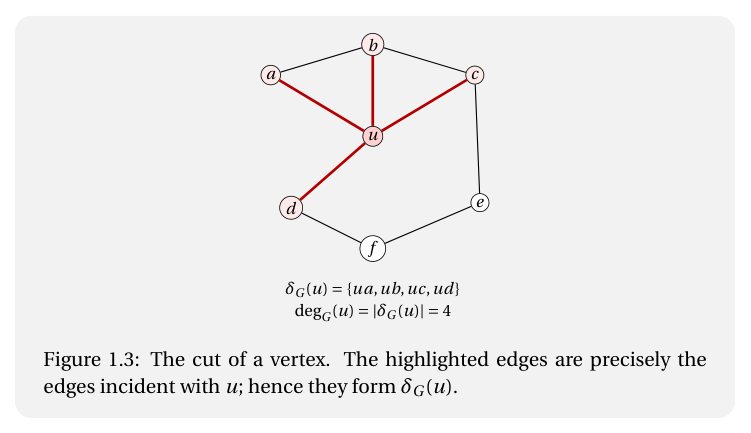
Os dois resultados a seguir costumam ser enfatizados entre os primeiros em introduções à teoria dos grafos, e seguiremos essa tradição. Aproveitamos também para introduzir uma notação que será útil.
Seja \(U\) um conjunto e \(X \subseteq U\). A função característica de \(X\) relativa a \(U\) é a função \[ \mathbf{1}^X_U : U \to \{0,1\} \] definida por \[ \mathbf{1}^X_U(u) := \begin{cases} 1, & \text{se } u \in X,\\ 0, & \text{se } u \notin X, \end{cases} \] para cada \(u \in U\). Observe que \[ |X| \;=\; \sum_{u \in U} \mathbf{1}^X_U(u). \] Por brevidade, escreveremos \(\mathbf{1}\) em vez de \(\mathbf{1}^X_U\) sempre que o universo relevante estiver claro pelo contexto. No Lema 1.1 a seguir, adotamos essa convenção e escrevemos \(\mathbf{1}^{\delta_v}\) em lugar de \(\mathbf{1}^{\delta_v}_E\), onde \(E\) é o conjunto de arestas do grafo.
Um grafo \(H\) é um subgrafo (subgraph) de um grafo \(G\) se \[ V(H) \subseteq V(G) \quad\text{e}\quad E(H) \subseteq E(G), \] e, nesse caso, escrevemos \(H \subseteq G\) e também dizemos que \(G\) é um supergrafo (supergraph) de \(H\).
Um subgrafo \(H\) de \(G\) é chamado de gerador (spanning) se \(V(H) = V(G)\). Assim, um subgrafo gerador de \(G\) é obtido mantendo todos os vértices de \(G\) e selecionando algumas de suas arestas.
Seja \(\emptyset \neq X \subseteq V(G)\). O subgrafo de \(G\) induzido por vértices em \(X\), ou simplesmente induzido por \(X\) (induced subgraph), denotado por \(G[X]\), é o grafo cujo conjunto de vértices é \(X\) e cujo conjunto de arestas é \[ E(G[X]) \,:=\, \{uv \in E(G) \mid u, v \in X\}. \] Em outras palavras, \(G[X]\) é obtido de \(G\) mantendo os vértices em \(X\) e todas as arestas de \(G\) cujos dois extremos pertencem a \(X\).
Se \(X \subseteq V(G)\) e \(V(G) \setminus X \neq \emptyset\), escrevemos \(G - X\) para o subgrafo induzido \(G[V(G) \setminus X]\). Dizemos que \(G - X\) é obtido de \(G\) pela remoção dos vértices em \(X\). Em particular, se \(u \in V(G)\) e \(V(G) \setminus \{u\} \neq \emptyset\), escrevemos \(G - u\) em vez de \(G - \{u\}\). Se \(\emptyset \neq F \subseteq E(G)\), pode-se também considerar o subgrafo cujo conjunto de arestas é \(F\) e cujo conjunto de vértices é o conjunto de todos os extremos das arestas em \(F\), isto é, o conjunto \(\bigcup F\).3 Esse grafo é chamado de subgrafo de \(G\) induzido por arestas em \(F\) (edge-induced subgraph), e é denotado por \(G[F]\).
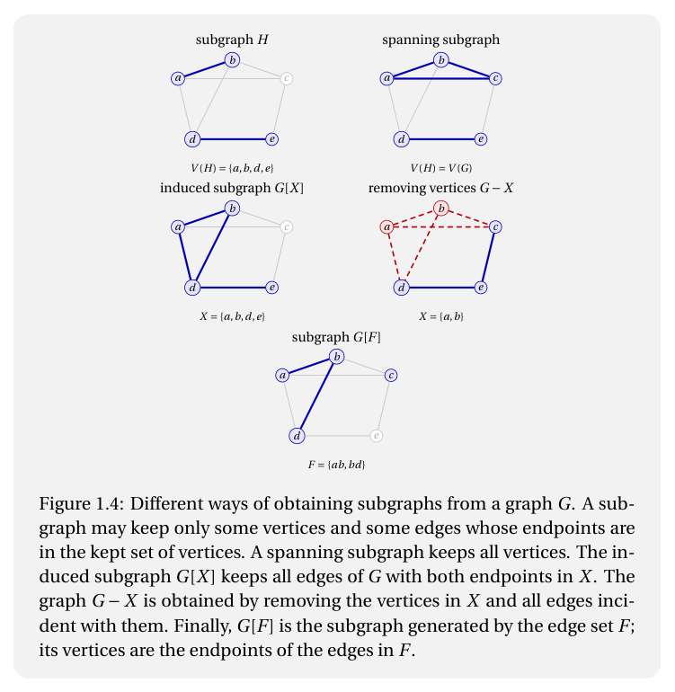
Seja \(G\) um grafo. Se \(F\) é um conjunto de subconjuntos de dois elementos de \(V(G)\), definimos \[ G + F \,:=\, (V(G),\; E(G) \cup F). \] Assim \(G + F\) é o grafo obtido de \(G\) adicionando as arestas em \(F\), de modo que \(G + F\) é um supergrafo de \(G\). Em particular, se \(e\) é um subconjunto de dois elementos de \(V(G)\), escrevemos \(G + e\) em vez de \(G + \{e\}\).
De modo análogo, se \(F \subseteq E(G)\), definimos \[ G - F \,:=\, (V(G),\; E(G) \setminus F), \] e assim \(G - F\) é um subgrafo de \(G\). Se \(e \in E(G)\), escrevemos \(G - e\) em vez de \(G - \{e\}\). Também combinaremos essas operações. Por exemplo, se \(e\) é um subconjunto de dois elementos de \(V(G)\) e \(f \in E(G)\), então \(G - f + e\) significa \((G - f) + e\), isto é, o grafo \((V(G),\,(E(G) \setminus \{f\}) \cup \{e\})\).
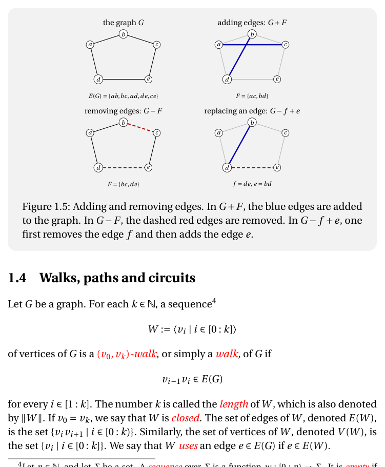
Seja \(G\) um grafo. Para cada \(k \in \mathbb{N}\), uma sequência4 \[ W \,:=\, \langle v_i \mid i \in [0:k] \rangle \] de vértices de \(G\) é um passeio (walk) de \((v_0, v_k)\) em \(G\), ou simplesmente um passeio de \(G\), se \[ v_{i-1}\,v_i \in E(G) \] para todo \(i \in [1:k]\). O número \(k\) é chamado de comprimento (length) de \(W\), também denotado por \(\|W\|\). Se \(v_0 = v_k\), dizemos que \(W\) é fechado. O conjunto de arestas de \(W\), denotado por \(E(W)\), é o conjunto \(\{v_i v_{i+1} \mid i \in [0:k)\}\). De modo análogo, o conjunto de vértices de \(W\), denotado por \(V(W)\), é o conjunto \(\{v_i \mid i \in [0:k]\}\). Dizemos que \(W\) usa uma aresta \(e \in E(G)\) se \(e \in E(W)\).
Um passeio \(\langle v_i \mid i \in [0:k] \rangle\) é um caminho (path) se seus vértices são dois a dois distintos, isto é, se \(v_i \neq v_j\) para todos \(i, j \in [0:k]\) com \(i \neq j\).
Um circuito (circuit) em \(G\) é um passeio \(\langle v_i \mid i \in [0:k] \rangle\) de comprimento \(k \geq 3\) tal que \(v_0 = v_k\) e \(\langle v_i \mid i \in [0:k) \rangle\) é um caminho.
Provamos isso por indução no comprimento do passeio. Seja \(W := \langle v_0, \ldots, v_k \rangle\) um passeio de \((x,y)\) em \(G\), com \(v_0 = x\) e \(v_k = y\). Se \(W\) é um caminho, não há nada a provar. Suponha então que \(W\) não é um caminho. Logo, existem índices \(i, j \in [0:k]\), com \(i < j\), tais que \(v_i = v_j\). Considere a sequência \[ W' \,:=\, \langle v_0, \ldots, v_i,\; v_{j+1}, \ldots, v_k \rangle. \] Essa sequência ainda é um passeio de \((x,y)\) em \(G\). Além disso, \(W'\) tem comprimento estritamente menor que o comprimento de \(W\). Pela hipótese de indução, existe um caminho de \((x,y)\) em \(G\), como requerido. \(\square\)
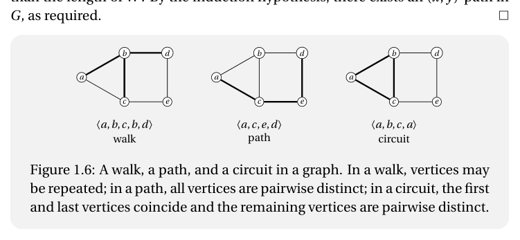
Seja \(G\) um grafo e escreva \(V := V(G)\). Definimos uma relação binária em \(V\), denotada por \(\sim_G\) e chamada de alcançabilidade (reachability), como se segue: para \(x, y \in V\), definimos \[ x \sim_G y \] se \(G\) contém um passeio de \((x,y)\).
É simples verificar que, para todos \(x, y, z \in V\), as seguintes propriedades valem:
De fato, (i) decorre do passeio \(\langle x \rangle\). Para (ii), basta reverter um passeio de \((x,y)\). Para (iii), basta concatenar um passeio de \((x,y)\) com um passeio de \((y,z)\). Portanto, \(\sim_G\) é uma relação de equivalência em \(V\).
As classes de equivalência de \(\sim_G\) são chamadas de componentes conexas (connected components) de \(G\). Assim, para cada \(x \in V\), a componente conexa de \(G\) que contém \(x\) é o conjunto \[ [x]_G \,:=\, \{y \in V \mid x \sim_G y\}. \] Um grafo \(G\) é conexo (connected) se tem exatamente uma componente conexa. Equivalentemente, \(G\) é conexo se, para todo \(x, y \in V(G)\), existe um passeio de \((x,y)\) em \(G\).
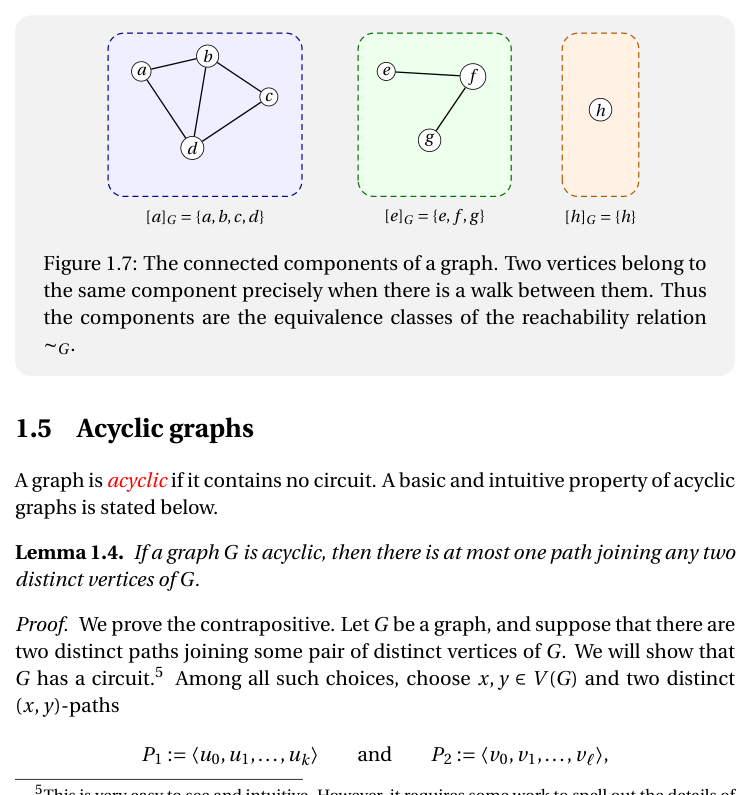
Um grafo é acíclico (acyclic) se não contém nenhum circuito. Uma propriedade básica e intuitiva dos grafos acíclicos é enunciada a seguir.
Afirmamos que \(V(P_1) \cap V(P_2) = \{x, y\}\). Suponha que não. Então existem \(i \in [1:k)\) e \(j \in [1:\ell)\) tais que \(u_i = v_j\). Agora, ou os caminhos \(\langle u_0, \ldots, u_i \rangle\) e \(\langle v_0, \ldots, v_j \rangle\) são distintos, ou os caminhos \(\langle u_i, \ldots, u_k \rangle\) e \(\langle v_j, \ldots, v_\ell \rangle\) são distintos. De fato, se ambos os pares de caminhos fossem iguais, então \(P_1 = P_2\), contrariando nossa escolha. No primeiro caso, obtemos dois caminhos distintos de \((x, u_i)\) com comprimento total \(i + j < k + \ell\). No segundo caso, obtemos dois caminhos distintos de \((u_i, y)\) com comprimento total \((k-i)+(\ell-j) < k + \ell\). Nos dois casos, contradizemos a escolha de \(x, y, P_1, P_2\). Portanto \(V(P_1) \cap V(P_2) = \{x, y\}\).
Consequentemente, \[ \langle u_0, u_1, \ldots, u_k, v_{\ell-1}, v_{\ell-2}, \ldots, v_0 \rangle \] é um circuito de \(G\). Portanto \(G\) não é acíclico. \(\square\)
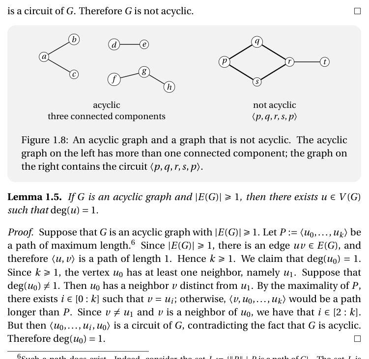
Como \(k \geq 1\), o vértice \(u_0\) tem pelo menos um vizinho, a saber \(u_1\). Suponha que \(\deg(u_0) \neq 1\). Então \(u_0\) tem um vizinho \(v\) distinto de \(u_1\). Pela maximalidade de \(P\), existe \(i \in [0:k]\) tal que \(v = u_i\); do contrário, \(\langle v, u_0, \ldots, u_k \rangle\) seria um caminho mais longo que \(P\). Como \(v \neq u_1\) e \(v\) é vizinho de \(u_0\), temos \(i \in [2:k]\). Mas então \(\langle u_0, \ldots, u_i, u_0 \rangle\) é um circuito de \(G\), contradizendo o fato de \(G\) ser acíclico. Portanto \(\deg(u_0) = 1\). \(\square\)
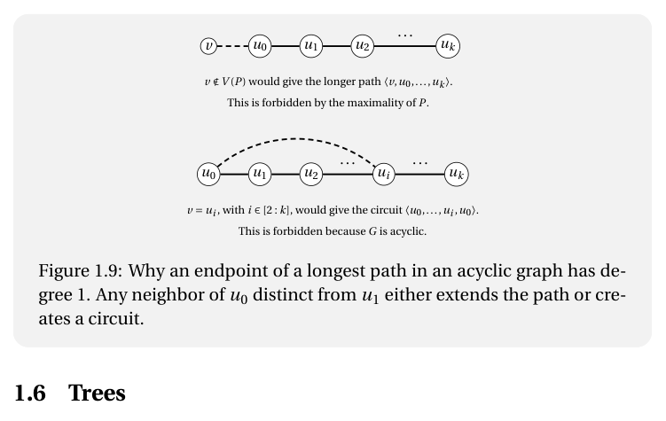
Um grafo é uma árvore (tree) se é conexo e acíclico. Assim, se \(T\) é uma árvore, então para todo \(x, y \in V(T)\) existe um único caminho de \((x,y)\) em \(T\). De fato, a existência decorre do fato de \(T\) ser conexo, e a unicidade decorre do Lema 1.4. Isso justifica a seguinte notação: se \(T\) é uma árvore e \(x, y \in V(T)\), escrevemos \(T(x,y)\) para denotar o único caminho de \((x,y)\) em \(T\).
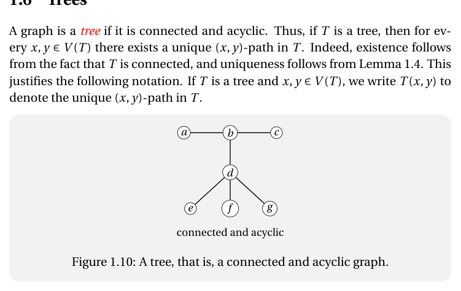
O próximo lema será útil para derivar algumas propriedades elementares das árvores.
Sejam \(x, y \in V(G')\). Como \(G\) é conexo, existe um caminho \(P\) de \((x,y)\) em \(G\). Como \(x, y \in V(G')\), o vértice \(u\) não é um extremo de \(P\). Além disso, \(u\) não pode ser um vértice interno de \(P\), porque todo vértice interno de \(P\) tem grau pelo menos 2 em \(G\), enquanto \(u\) tem grau 1. Logo \(u\) não pertence a \(P\). Portanto \(P\) é um caminho de \((x,y)\) em \(G'\), e logo \(G'\) é conexo. \(\square\)
Suponha que \(|V(T)| \geq 2\). Pelo Lema 1.5, \(T\) tem um vértice \(u\) de grau 1. Considere o grafo \(T' := T - u\). É claro que \(T'\) é acíclico, pois um circuito em \(T'\) seria um circuito em \(T\). Além disso, pelo Lema 1.6, \(T'\) é conexo. Logo \(T'\) é uma árvore. Pela hipótese de indução, \(|E(T')| = |V(T')| - 1\). Como \(u\) tem grau 1, remover \(u\) remove exatamente uma aresta. Portanto \(|E(T)| = |E(T')| + 1\) e \(|V(T)| = |V(T')| + 1\). Logo \[ |E(T)| = |E(T')| + 1 = \bigl(|V(T')| - 1\bigr) + 1 = |V(T')| = |V(T)| - 1. \quad\square \]
Suponha que \(|V(T)| \geq 2\). Então \(|E(T)| = |V(T)| - 1 \geq 1\). Pelo Lema 1.5, \(T\) tem um vértice \(u\) com \(\deg(u) = 1\). Seja \(T' := T - u\). Como \(u\) tem grau 1, temos \(|E(T')| = |E(T)| - 1\) e \(|V(T')| = |V(T)| - 1\). Logo \(|E(T')| = |V(T')| - 1\). Também, \(T'\) é acíclico, pois um circuito em \(T'\) seria um circuito em \(T\). Pela hipótese de indução, \(T'\) é uma árvore. Resta mostrar que \(T\) é conexo.
Sejam \(x, y \in V(T)\). Se \(x = y\), não há nada a provar. Suponha que \(x \neq y\). Se \(x, y \in V(T')\), então, como \(T'\) é conexo, existe um caminho de \((x,y)\) em \(T'\), que também é um caminho em \(T\). Suponha, por fim, que um de \(x, y\) seja igual a \(u\), digamos \(y = u\). Seja \(v\) o único vizinho de \(u\) em \(T\). Como \(x \neq y\), temos \(x \in V(T')\). Também \(v \in V(T')\). Como \(T'\) é conexo, existe um caminho \(P'\) de \((x,v)\) em \(T'\). Acrescentando o vértice \(u\) a \(P'\), isto é, formando o caminho \(P' \cdot \langle u \rangle\), obtemos um caminho de \((x,u)\) em \(T\). Portanto existe um caminho de \((x,y)\) em \(T\). Logo \(T\) é conexo. Como \(T\) também é acíclico, \(T\) é uma árvore. \(\square\)
Suponha que \(|V(T)| \geq 2\). Escreva \(n := |V(T)|\) e \(m := |E(T)|\). Pelo Lema 1.1, \[ \sum_{v \in V(T)} \deg(v) = 2m = 2n - 2. \] Logo existe \(u \in V(T)\) com \(\deg(u) \leq 1\). De fato, se \(\deg(v) \geq 2\) para todo \(v \in V(T)\), então \(\sum_{v \in V(T)} \deg(v) \geq 2n\), o que é impossível. Como \(T\) é conexo e \(n \geq 2\), nenhum vértice de \(T\) tem grau 0. Portanto \(\deg(u) = 1\).
Seja \(T' := T - u\). Pelo Lema 1.6, o grafo \(T'\) é conexo. Além disso, como \(u\) tem grau 1, remover \(u\) remove exatamente uma aresta. Assim, \[ |E(T')| = |E(T)| - 1 = (|V(T)| - 1) - 1 = |V(T)| - 2 = |V(T')| - 1. \] Pela hipótese de indução, \(T'\) é uma árvore.
O grafo \(T\) é conexo por hipótese. Resta mostrar que \(T\) é acíclico. Como \(T'\) é uma árvore, \(T'\) não tem circuito. Se \(T\) tivesse um circuito \(C\), então \(u\) não poderia ser vértice de \(C\), porque todo vértice de um circuito tem grau pelo menos 2 em \(T\), enquanto \(u\) tem grau 1. Logo \(C\) seria um circuito em \(T'\), uma contradição. Portanto \(T\) é acíclico e, consequentemente, \(T\) é uma árvore. \(\square\)
Seja \(G\) um grafo e \(X \subseteq V(G)\). Escrevemos \(\delta_G(X)\), ou simplesmente \(\delta(X)\) quando o grafo está claro pelo contexto, para denotar o conjunto de arestas de \(G\) com um extremo em \(X\) e o outro em \(V(G) \setminus X\), isto é, \[ \delta_G(X) \,:=\, \bigl\{\, e \in E(G) \;\big|\; e \cap X \neq \emptyset \text{ e } e \cap (V(G) \setminus X) \neq \emptyset \,\bigr\}. \] Um corte (cut) de \(G\) é um subconjunto \(K\) de \(E(G)\) para o qual existe um subconjunto \(X\) de \(V(G)\) tal que \(K = \delta_G(X)\).
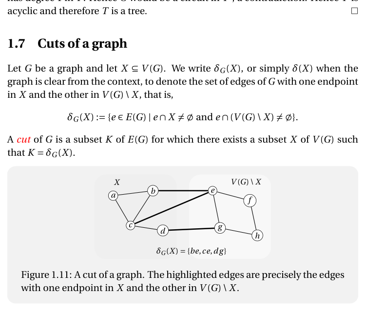
Reciprocamente, suponha que \(\delta(X) \neq \emptyset\) para todo subconjunto próprio não vazio \(X\) de \(V(G)\). Sejam \(x, y \in V(G)\) e seja \(X := [x]_G\). Afirmamos que \(\delta(X) = \emptyset\). De fato, suponha que \(u \in X\) e que \(v\) é um vizinho de \(u\) em \(G\). Como \(u \in X\), existe um passeio \(P\) de \((x,u)\) em \(G\). Ora, \(P \cdot \langle v \rangle\) é um passeio de \((x,v)\) em \(G\). Logo \(v \in X\). Portanto \(\delta(X) = \emptyset\).
Como \(x \in X\), o conjunto \(X\) é não vazio. Pela hipótese, \(X\) não pode ser um subconjunto próprio de \(V(G)\). Logo \(X = V(G)\). Em particular, \(y \in X\). Portanto existe um caminho de \((x,y)\) em \(G\). Logo \(G\) é conexo. \(\square\)
1 Com essa convenção, grafos têm pelo menos um vértice. Isso evita alguns casos degenerados que, do contrário, teriam de ser excluídos repetidamente. ↩
2 Para um conjunto \(A\), \(2^A\) é o conjunto de todos os subconjuntos de \(A\). ↩
3 Se \(F\) é um conjunto cujos elementos também são conjuntos, então \(\bigcup F\) é o conjunto de todos os \(x\) para os quais existe \(f \in F\) com \(x \in f\). ↩
4 Seja \(n \in \mathbb{N}\) e \(\Sigma\) um conjunto. Uma sequência sobre \(\Sigma\) é uma função \(w : [0:n) \to \Sigma\). Ela é vazia se \(n = 0\), caso em que a denotamos por \(\epsilon\). O conjunto de sequências sobre \(\Sigma\) é \(\Sigma^*\); o de sequências não vazias é \(\Sigma^+\). Se \(u : [0:m) \to \Sigma\) e \(v : [0:n) \to \Sigma\), a concatenação \(u \cdot v\) é a sequência \(uv : [0:m+n) \to \Sigma\) com \((uv)_i = u_i\) para \(i \in [0:m)\) e \((uv)_i = v_{i-m}\) para \(i \in [m:m+n)\). Assim, um passeio \(W\) em \(G\) é um elemento de \(V(G)^+\). ↩
5 Isso é muito fácil de ver e intuitivo. No entanto, exige algum esforço para explicitar os detalhes de uma demonstração rigorosa. ↩
6 Tal caminho existe. De fato, considere o conjunto \(L := \{\|P\| \mid P \text{ é um caminho de } G\}\). O conjunto \(L\) é não vazio, pois \(\langle u \rangle\) é um caminho para todo \(u \in V(G)\). Além disso, \(L\) é limitado superiormente por \(|V(G)| - 1\), porque todo caminho tem comprimento no máximo \(|V(G)| - 1\). Portanto \(L\) tem um máximo \(k\) e existe um caminho \(P\) de \(G\) com \(\|P\| = k\). ↩